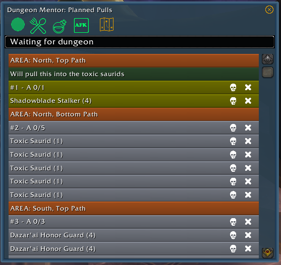
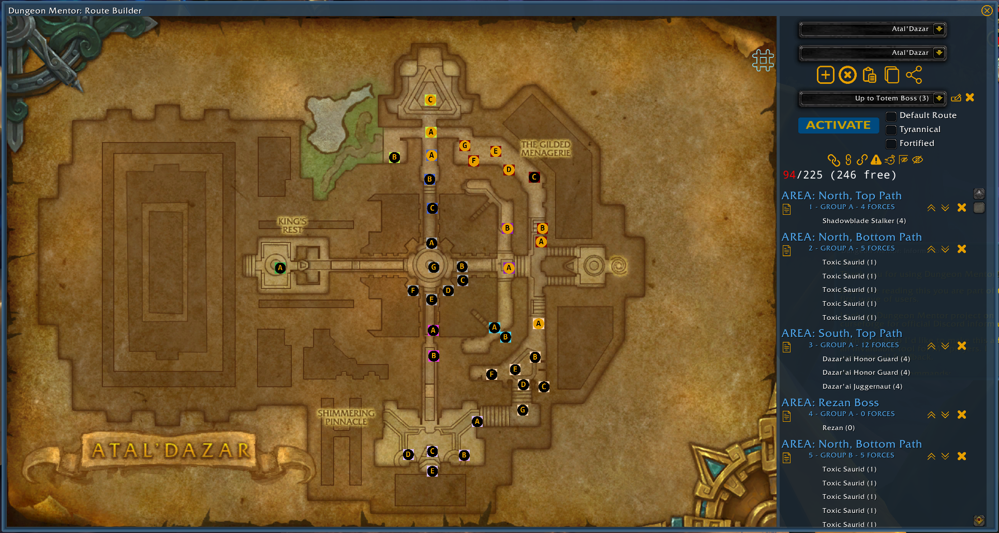

Welcome to the official site for Dungeon Mentor, a World of Warcraft addon.
The purpose of this addon is to provide Mythic+ dungeon groups with additional tools that help in two key aspects: group coordination and guidance during the dungeon.
Its most important addition to the dungeon experience is a "pull tracker" shown here.

The pull tracker provides a specific view of the route the tank will take through a dungeon, annotated with extra information. In this example we see the tank is telling the group "will pull this into the toxic saurids". The yellow indicates
what the next group the tank will pull is, and this extra information tells the group the tank is ONLY pulling the Shadowblade Stalker then going down a different path in the dungeon, instead of continuing in the line that starts with the Stalker.
In order to support this capability, Dungeon Mentor introduces its own route builder, shown here.

The capabilities of this addon and the conceptual model make this new route builder a necessity. Exploring this route builder is best left to the YouTube videos, however some of the most important aspects introduced here are:
- Common Language: Every pull group in a dungeon has a specific label - an area of the dungeon combined with a letter. This provides groups building routes with a way to identify and talk about pull groups using a short, to the point bit of langauge.
- Route Annotations: Each pull group in the route for a dungeon can be annotated with important information, such as "use haste boost on this group" or "stealth ahead of this group".
- Route Notes: The tank can provide their own notes for each pull group, and these notes can be specifically promoted to an annotation. The "will pull this into the toxic saurids" is an example of a note promoted to an annotation.
- Ease of use: The route builder UI has been designed with ease of use and immediate communication of important information in mind. Building a route, annotating it, re-organizing has never been easier.